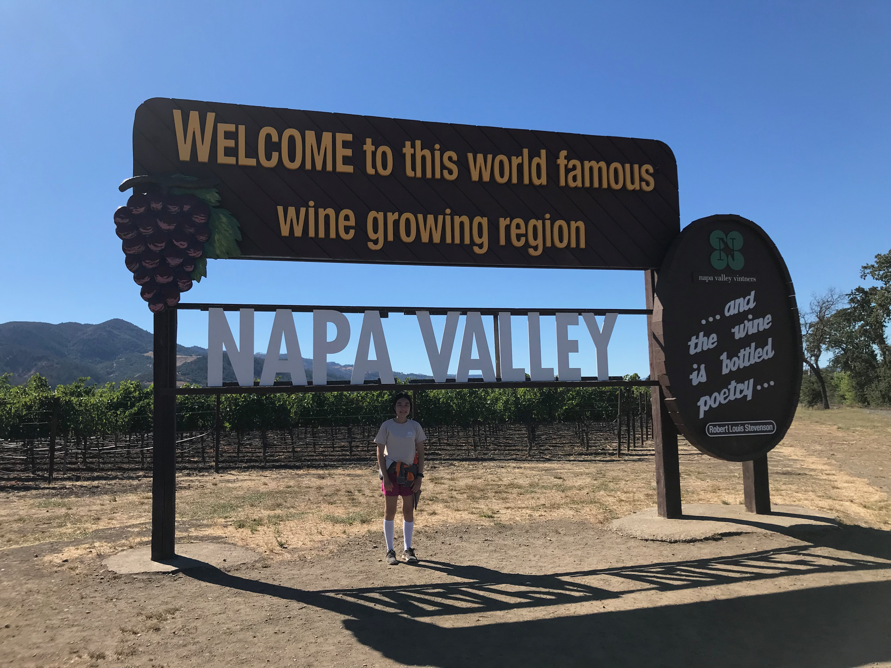
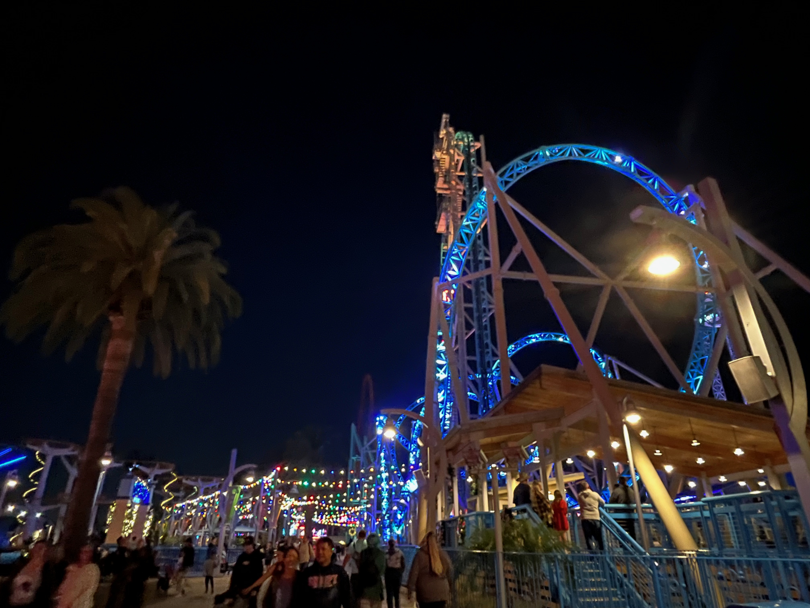

Memorable Photos and Videos
Here are some photos and videos from the 2020s that have been memorable to me.
2020
2021


2022



In addition to Napa and Fairfield, I also visited other places in Northern California (including Lassen Volcanic National Park and Redding) and Oregon (including Crater Lake and Prospect, OR). A Youtube video of this trip (which I went with my family) can be found here.

A video recap of my 2022-23 winter break can be found here. The video includes some photos and videos that I took from the Warriors game.
2023
A full video recap of my third year at UCSB can be found here.


A video recapping the various places that I went during my summer break can be found here.

2024